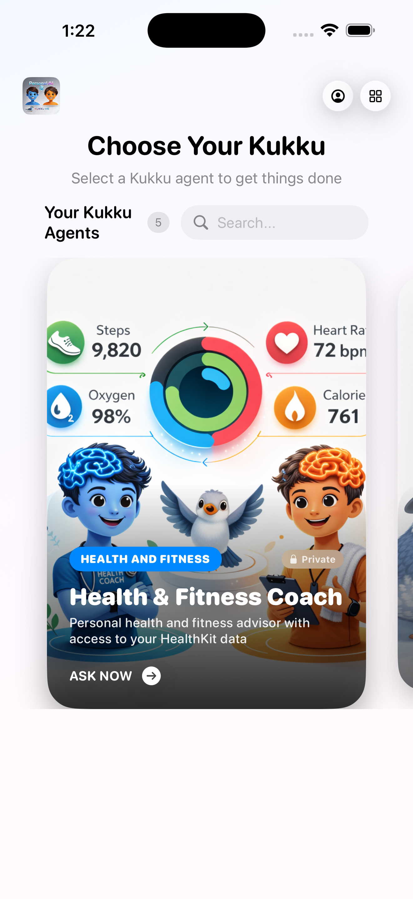

Dashboard
Magazine style pick for your private and public agents.


On-device. Private. Agentic
Kukku blends local AI, thoughtful tools, and a simple interface so you can reason, act, and do things — without sending your data to the cloud.
What you get
Chain multiple actions in one prompt — search, summarize, schedule, and share without context switching.
Bring in documents, notes, and structured knowledge while keeping the interface minimal.
Inference runs on your device. Your data stays yours, with optional cloud sync later.
Native SwiftUI layout with responsive design, optimized for Apple Silicon performance.
How it works
Kukku orchestrates tools behind the scenes — you describe the intent, Kukku handles the sequence.
Select from a pre-built agents or create your own on given topic with simple wizard.
Use natural language; Kukku interprets tasks and the right tool chain to invoke actions such as Messsages,reminder.
Health Metrics Activity Card and personal images are summarized and presented in a private, secure view.
Summarize and Analyze your private documents
Work with multiple AI agents in Team, each with distinct roles and capabilities.
Securely connect to Kukku Agents and Bots for seamless collaboration in Team or gossip for fun
Faster capture to action
Runs offline
Data brokers
Contact
For partnerships, product questions, or support, reach out directly by email.
Email us and we will get back to you.
support@kukku.me